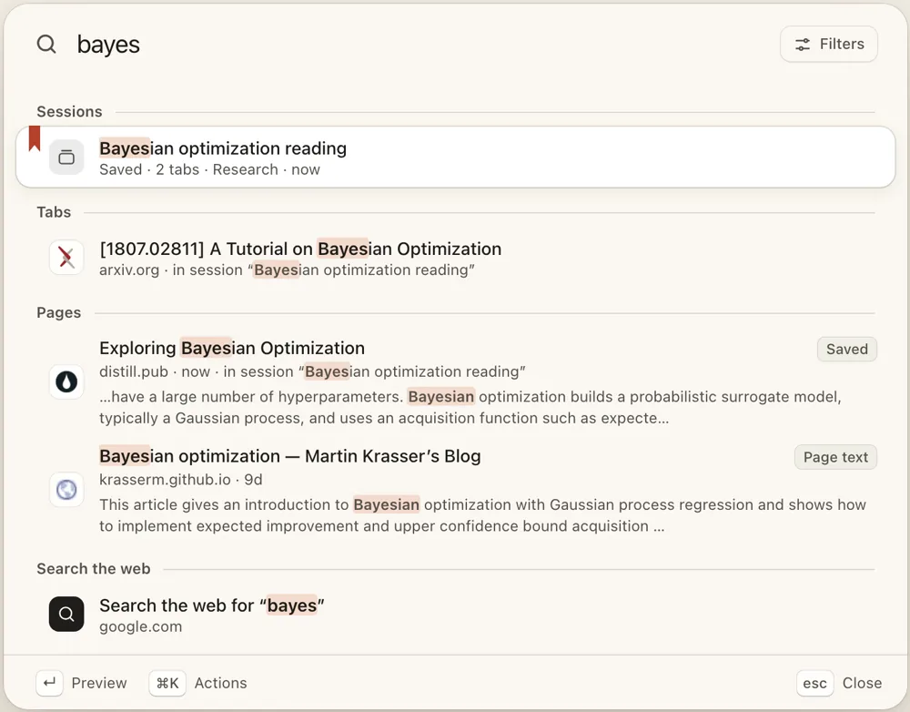

Tabs & sessions, macOS, Safari, Chrome
Wayfinder
Pick up where you left off — pages, in order.

What it does
A browser you can come back to.
One palette
Tabs, saved pages, sessions and, if you turn it on, the text of pages you have already read.
Save a window, not a bookmark
Capture the pages of a working session in order, then resume the whole thing later, with a version history behind it.
Quick Open from anywhere
⌃⌥Space reopens a session or a saved page without switching to the browser first.
A calm new tab
A deck of your tasks, a clock, site search shortcuts and an optional daily wallpaper.
Private by default
Visit recording and page-text indexing are off until you enable them; private windows, excluded sites and sensitive sites are never indexed.
Yours to sync
No account, no analytics, no server. Sync is optional and goes to your own WebDAV server or your own iCloud account.
How it fits together
A task, a session, a page.
A task is a saved window
Capture the pages of a working session in order, then resume the whole thing later, with a version history behind it.
Sessions are the versions of that window
Over time, a window becomes a version history instead of a pile of tabs.
Saved pages are the ones you want again
The individual things you kept on purpose, searchable next to everything else.
The palette searches all of them at once
And it remembers where a match came from — a tab still open, a page you saved, a session snapshot, or text you have read before.
Wayfinder turns Safari into a place you can come back to. Keep a window as a task, restore it whenever you need it, and search every open tab, saved page and session from one palette that works on any page — and from any app, with a global hotkey.
What it records
Recording visits and indexing page text are deliberately separate switches, both off by default. Full page text never syncs; the optional index sync carries a title, address and a short excerpt only. Form data, logins and unsaved page state are never restored.
Getting set up
Open Wayfinder once, then go to Safari → Settings (⌘,) → Extensions, enable Wayfinder and allow it on all websites. Press ⌘⇧K on any page to open the palette. In Chrome, install the extension from the Chrome Web Store and press Ctrl+Shift+K (⌘⇧K on a Mac).
Pages that were already open before installing or updating need a reload before the palette can attach to them.
Price
Wayfinder is free, with no subscription and no in-app purchase.
Need help with Wayfinder?
Setup, the palette, sessions, sync and data questions are answered on the support page.